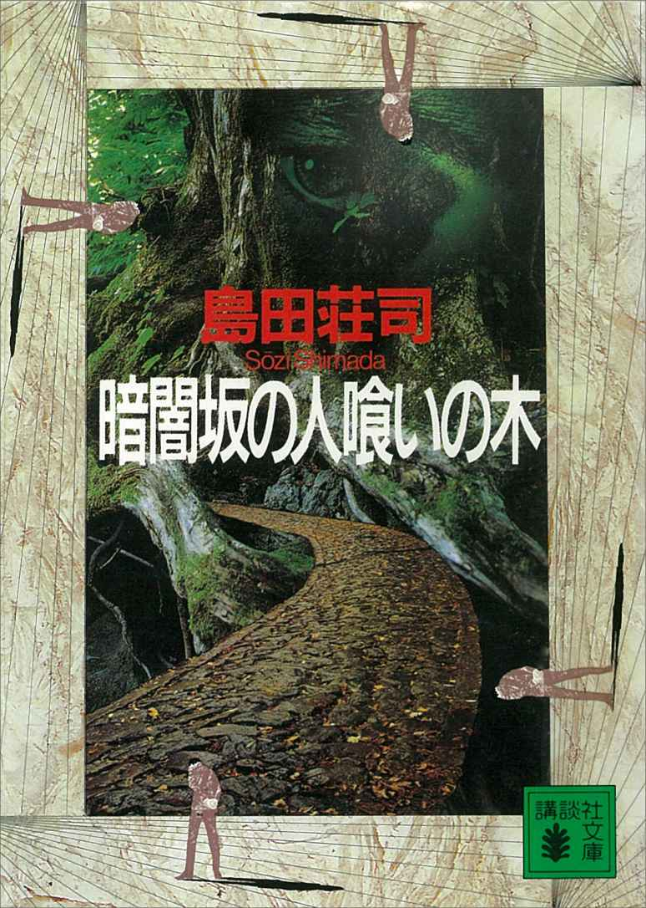
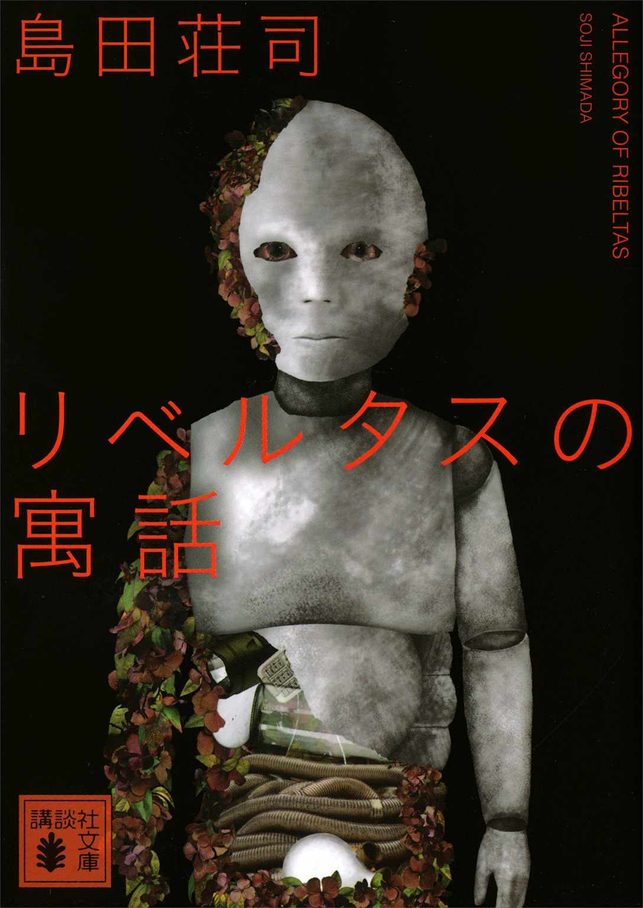

| ドラマ化決定！ 名探偵・御手洗潔シリーズ ガイドブック | |
| Unknown | |
| (2014) | |
不可解で奇妙な謎！
巧妙に作りあげられた殺人迷宮！
鋭い推理で解き明かすのは、名探偵の中の名探偵「御手洗潔」！
奇想と論理と独創的トリックに満ちた
日本の本格ミステリーの最高峰がここにある!!
このたび、講談社から刊行されている「名探偵・御手洗潔」シリーズ13 作品が一挙に電子化され、既配信の２作品を含めて、15 作品が電子書籍で読めるようになりました。
その内訳は左記のとおりです。
〈絶対読んでほしい長編３作〉
『改訂完全版 占星術殺人事件』
『斜め屋敷の犯罪』
『改訂完全版 異邦の騎士』
〈切れ味抜群の短編集３冊〉
『御手洗潔の挨拶』
『御手洗潔のダンス』
『御手洗潔のメロディ』
〈たっぷり読ませるミステリー巨編６作〉
『暗闇坂の人喰いの木』
『水晶のピラミッド』
『眩暈』
『アトポス』
『ネジ式ザゼツキー』
『星籠の海』（上）（下）
〈力作ぎっしりの中編集３冊〉
『Ｐの密室』
『ＵＦＯ大通り』
『リベルタスの寓話』
この絶好の機会に、日本の本格ミステリーを代表する「名探偵・御手洗潔」シリーズ各作品のストーリーと読みどころを、島田荘司先生の大ファンである電子書籍営業担当Ｔがガイドいたします。
さらに島田先生ご自身による作品コメントも掲載！
初めて読む方にも、御手洗潔のファンの方にも、この素晴らしいシリーズの魅力を伝えられたら、と願っています。
作者・島田荘司とは？
１９４８年広島県生まれ。武蔵野美術大学卒。
１９８１年、『占星術殺人事件』でミステリー界に衝撃のデビュー。以後、『斜め屋敷の犯罪』『異邦の騎士』などの「御手洗潔」シリーズ、『寝台特急「はやぶさ」１／60 秒の壁』『奇想、天を動かす』などの「吉敷竹史」シリーズを中心に、人気作品を多数生み出し、本格ミステリーの旗手として不動の地位を築きます。
２００８年、第12 回日本ミステリー文学大賞を受賞。
また綾辻行人さんを嚆矢とする新本格ミステリーの黎明期に、その擁護者として多くの作家のデビューに尽力。現在は「島田荘司選 ばらのまち福山ミステリー文学新人賞」や「本格ミステリー『ベテラン新人』発掘プロジェクト」、台湾で「島田荘司推理小説賞」を主宰。新人発掘に力を注ぐ姿勢は変わりません。
「ゴッド・オブ・ミステリー」として敬われ、現代日本の本格ミステリー界に君臨する巨匠です。
名探偵・御手洗潔とは？
島田荘司先生が生み出した、名探偵の中の名探偵。
シャーロック・ホームズ的な天才・奇人タイプで、奔放な言動で周囲を翻弄することもありますが、不可解な謎を超人的な集中力と観察力、卓越した推理力で鮮やかに解決します。ＩＱは３００以上。
京都大学医学部中退。脳科学をはじめ心理学、遺伝子工学、天文学、歴史学など幅広い領域の学問に精通している知の達人です。
その一方でバイクを駆り、乗馬やダイビングをこなすなど行動派でもあります。
皮肉やジョークを連発しますが、決して威張りません。
長身で整った顔立ち。女性から人気はあるものの、極度の女嫌いです。
初期の作品ではワトソン役の石岡和己と横浜の馬車道で同居し、探偵事務所を開いていました。現在は北欧にひとり移住し、脳科学の研究者となっています。
特技は占星術、ギターの演奏、語学。好きなものはジャズと犬。
唯一の弱点はやはり自分の名前？ 初期の作品では、自分の名前を恥ずかしがり、あまり言いたがらない姿がコミカルに書かれています。
この紹介冊子に掲載されている御手洗潔のイラストは、「名探偵・御手洗潔」シリーズのコミカライズ『ミタライ 探偵御手洗潔の事件記録』１巻～３巻（講談社 モーニングＫＣ）の作者である漫画家・原点火さんによる描き下ろし新作です。
デビュー作は世界水準の超傑作ミステリー！ 伝説はここから始まる！
『改訂完全版 占星術殺人事件』
密室で殺された画家が遺した手記には、６人の処女の肉体から完璧な女＝アゾートを創る計画が書かれていた。彼の死後、６人の若い女性が行方不明となり、肉体の一部を切り取られた姿で日本各地で発見される。事件から四十数年、未だ解かれていない猟奇殺人のトリックとは!? 名探偵・御手洗潔を生んだ衝撃のデビュー作、完全版！ ２０１２年の「東西ミステリーベスト１００」（週刊文春特別企画）では、日本部門で第３位選出。
島田荘司先生コメント
トリックを思いついた瞬間を、30 年以上経った今でも、はっきりと憶えています。ベッドの上で、このトリックならみんな驚くぞという強いわくわく感を得ました。かねてから30 歳になったら小説を書こうと決めていたし、その２つのモチベーションで書き上げました。
営業担当Ｔ コメント
名探偵・御手洗潔が初登場する、島田先生のデビュー作にして超傑作！ 永遠の名作です。
読者への挑戦が二度にわたって行われますが、謎が解ける人はまずいないでしょう。
大胆不敵にしてずば抜けた発想のトリックが明かされ、複雑怪奇な謎が一瞬にしてほどけてしまう、このめくるめく快感は決して忘れられません。
御手洗と相棒・石岡くんとのやりとりも楽しく、名セリフや警句の宝庫です。私のお気に入りの御手洗のセリフは「はん！ 畑の大根を盗もうと思って、地球の裏側から穴を掘ってたモグラみたいだぜ！」です（偏愛）。
このトリックは天才しか思いつけない！
『斜め屋敷の犯罪』
北海道の最北端、宗谷岬の高台に斜めに傾いて建つ西洋館。「流氷館」と名づけられたこの奇妙な館で、主人の浜本幸三郎がクリスマス・パーティを開いた夜、奇怪な密室殺人が起きる。招かれた人々が狂乱する中で、またもや次の惨劇が......。恐るべき連続密室殺人の謎を解き明かせるのは名探偵・御手洗潔のみ！ 本格ミステリーの逸品。
島田荘司先生コメント
この作のトリックにも、なかなか自信を持っていました。名探偵が登場するヴァンダイン型の定型（コード）を踏まえて書いたのですが、当時は冒険小説が大ブームで、名探偵ものは下火でしたから、ずいぶん異色作が現れたと思われたようです。
営業担当Ｔ コメント
シリーズ第２作にして、またもとてつもない発想のトリックが炸裂し、読者の度肝を抜く大傑作です！ ある意味、とてもシンプルなトリックなのですが、ちょっと思いつかない。天才・島田先生しか生み出せないトリックです。また、その大トリックを支える伏線が非常にうまく張ってあり、謎解きのシーンで続けざまに「なるほど！」と思わず声をあげてしまうこと必定です。
御手洗の名探偵っぽいエキセントリックな言動に周囲が振り回される様も笑えます。実はその振る舞いにもある意図が秘められていたのですが、見抜けないですよ！
ラストシーンに涙あふれる愛のミステリー！
『改訂完全版 異邦の騎士』
失われた過去の記憶が浮かび上がり、男は戦慄する。自分は本当に愛する妻子を殺したのか。やっと手にした幸せな生活に忍び寄る新たな魔手。名探偵・御手洗潔の最初の事件を描いた傑作ミステリー『異邦の騎士』に著者が精魂こめて全面加筆した改訂完全版。幾多の歳月を越え、いま異邦の扉が再び開かれる。
島田荘司先生コメント
実は『占星術殺人事件』よりも先に書いていたのがこれで、つまりこれが真の処女作です。刊行したのはデビュー後７年も経ってからですが、読者の評判が予想外によく、当時はびっくりしました。お蔵に入れるくらいで、それほどとは思っていなくて、でもやはり好きな作品です。
営業担当Ｔ コメント
人気の面ではもしかしたらシリーズトップに来るかもしれません。それぐらい素晴らしい作品です。占星術師であり卓越したギタリスト、しかし喫茶店内で突如演説する変人、といった若き御手洗のさまざまな面がたっぷり見られるのも楽しいです。何よりも友人の危機を救うため、バイクを駆って颯爽と現れるシーンは、御手洗の登場場面のベストではないでしょうか。
そして、この作品は美しくせつない恋愛ミステリーでもあるのです。ラストの手紙にこめられた「想い」を知ると必ず涙することでしょう。
すべてが面白く心に残る極上の短編集！
『御手洗潔の挨拶』
嵐の夜、マンションの11 階から姿を消した男が、13 分後、走る電車に飛びこんで死ぬ。しかし全力疾走しても辿りつけない距離で、その首には絞殺の痕跡もあった。男は殺されるために謎の移動をしたのか？ 奇想天外にして巧妙なトリックを秘めた４つの事件に名探偵・御手洗潔が挑む短編集第１弾。
島田荘司先生コメント
トリックのアイディアがまとまって降ってくる時期があり、拾い集めてメモのリストを作り、良いアイディアから順に作品化していきました。この頃の御手洗ものの短編は、すべてその流れで、だから迷いが全然なくて、勢いがあるかもしれません。
営業担当Ｔ コメント
収録されている４つの短編、「数字錠」「疾走する死者」「紫電改研究保存会」「ギリシャの犬」のすべてが面白く、心に残る極上の短編集です。特に「数字錠」は御手洗と少年の交流を描いたクリスマス・ストーリーで、泣けます。ファンの人気もとても高い短編です。ちなみに「疾走する死者」は御手洗潔シリーズ以外の島田先生の作品に登場する人物が何人も出てきたり、『異邦の騎士』とリンクするシーンが描かれたりして、島田先生の熱心なファンならばニヤリとなること受け合いです。
冴えわたる名推理！ 本格ミステリーのお手本というべき短編集！
『御手洗潔のダンス』
人間は空を飛べるはずだ、と日頃主張していた幻想画家が、４階にあるアトリエから奇声と共に姿を消した。そして４日目、彼は地上20 メートルの電線上で死体となっていた。しかも黒い背広姿、両腕を大きく拡げ、まさに空飛ぶポーズで！ 画家に何が起きたのか？ 名探偵・御手洗潔が奇想の中で躍動する快作ぞろいの短編集。
島田荘司先生コメント
当時、雑誌編集者の強い意向で、講談社ではノンシリーズ短編のみ、御手洗短編は光文社のミステリー専門誌「ＥＱ」に書いていました。でも本は、御手洗ものが講談社、ノンシリーズは光文社から出るというねじれが。これは単行本編集者の意向。頓珍漢でしたね。
営業担当Ｔ コメント
短編集第２弾です。短編の中でも飛び切りの不可能状況を扱った「山高帽のイカロス」（タイトルもいい！）、トリックが行われる情景が美しい「ある騎士の物語」、浅草を舞台に奇想天外な犯罪を暴く「舞踏病」、ワトソン役の石岡くんが描く御手洗のポートレート「近況報告」の４編を収録。どれも充実した内容で、本格ミステリーならではの面白さが存分に味わえます。
名探偵の過去と現在を伝えるバラエティ豊かな短編集！
『御手洗潔のメロディ』
何度も壊されるレストランの便器と、高名な声楽家が捜し求める美女。無関係としか思えない２つの出来事の間に御手洗潔が存在する時、見えない線が光り始める。御手洗の奇人ぶり天才ぶりが際だつ「ＩｇＥ」のほか、大学時代の危険な事件「ボストン幽霊絵画事件」など、名探偵の過去と現在をつなぐ４つの傑作短編を収録。
島田荘司先生コメント
ロスアンジェルスに10 年住んでいたのですが、「さらば遠い輝き」は、ＬＡにいたから書けた作です。サンタモニカのビーチと、シュワルツェネッガーのレストランが舞台。松崎レオナ主役のこの短編は、ハリウッドの匂いがして、女性読者に好まれているようですね。
営業担当Ｔ コメント
短編集第３弾です。「ＩｇＥ」と「ボストン幽霊絵画事件」は本格ミステリー、「ＳＩＶＡＤ ＳＥＬＩＭ」は御手洗のギター演奏シーンが盛り込まれた一種の番外編、「さらば遠い輝き」は松崎レオナがメインの特別編というちょっと変わった色合いです。御手洗がかつてハーヴァード大学の学生だったこと、今はスウェーデンで脳の研究をしていることがわかります。御手洗と石岡くんがケンカして冷戦状態になったり、レオナが２人の仲に嫉妬したり、キャラクタードラマも楽しめます。
怪奇ロマンと本格ミステリーの融合！ 面白コワイ！
『暗闇坂の人喰いの木』
さらし首の名所・暗闇坂にそそり立つ樹齢２０００年の大楠。この巨木が次々に人間を吞み込んだ？ 近寄る人間たちを狂気に駆り立てる大楠の謎とは何か？ 信じられぬ怪事件の数々に名探偵・御手洗潔が挑戦する。だが真相に迫る御手洗も恐怖にふるえるほど、事件は凄惨を極めた。本格ミステリーの旗手が全力投球する傑作。
島田荘司先生コメント
「１年に１作、大長編物語を書く」と決意し、最初に書いた作です。時代に人物記号化表現の強制が見えはじめて、危機感を感じていました。これは社会派強制の裏面で、ジャンル延命のために、私だけは豊饒な物語性維持の姿勢を、貫いておく必要があったんです。
営業担当Ｔ コメント
長編第４作です。これまでの長編とは違い、真相が明らかになることでかえって怖さが増す、ダークな印象の作品となっています。本格ミステリーと怪奇ロマンの融合が図られたのでしょうか。もちろん驚くべき奇想は健在で、「巨人が住んでいるとしか思えない家」の謎が解き明かされた時は思わず唸りました。シリーズのヒロインというべき松崎レオナが初登場するのも注目です。

時空を超えて繰り広げられる超絶の名推理！ 超大作ミステリー！
『水晶のピラミッド』
エジプト・ギザの大ピラミッドを原寸大で再現したピラミッドで起こる怪事。冥府の使者アヌビスが５０００年の時空を超えて突然甦り、空中30 メートルの密室で男が「溺死」を遂げる！ アメリカのビッチ・ポイントに出現した現代のピラミッドの謎に挑む名探偵・御手洗潔。壮大なテーマに挑んだ本格ミステリーの大作。
島田荘司先生コメント
自作の舞台に私は、何故か「書いてから行く」ことが多いのですが、この作は珍しく執筆前にエジプト取材に行きました。ちょうど湾岸戦争の時で、通訳も友人も連れず単身。今思えばよくそんな危険な時期に、危険なことをしたと思う。でも度胸はつきました。
営業担当Ｔ コメント
長編第５作です。アメリカ、エジプト、タイタニック号船上と物語は時空を超えて壮麗に展開します。ピラミッドの秘密、文明溺死論、出没する怪物アヌビス、そしてありえざる密室殺人と内容も盛りだくさん。ヒロイン・松崎レオナはハリウッド女優となって、御手洗に事件解決の依頼に訪れます。クールに突き放す御手洗と、情熱的に御手洗を愛するレオナの関係の変化も見どころです。石岡くんは、あまりに美しいレオナにおたおたしてばかりです。しっかりして！
世界の終焉が近づく!? 新たなる『占星術殺人事件』とは!?
『眩暈』
切断された男女が合成され、両性具有者となって甦る。窓の外には荒涼たる世界の終焉の光景が広がっているばかりだ。『占星術殺人事件』を愛読する青年が書き残した戦慄の日記が示すものは何か。醜悪な現実世界に奇想と驚天動地のトリックの矢を放つ。ミステリーの新たな飛翔を決定づけた傑作。
島田荘司先生コメント
新本格ミステリーの立役者である伝説の編集者、宇山日出臣さんが書いたキャッチコピー、「醜悪な現実世界に、奇想と驚天動地のトリックの矢を放つ」が忘れられません。紙の本（ハードカバー）の造本・デザインもすごく凝っていて、とても気に入っています。
営業担当Ｔ コメント
長編第６作です。次々と異常なことが起き、ついには「世界が一変する」という強烈な謎に引っ張られ、一気に読んでしまいます。現実とは思えない、幻想的で異様な手記を一読して、すぐ裏側に秘められた真相の一端を見抜く御手洗ですが、いつものように石岡くんにはなかなか答えを教えてくれません。御手洗の言葉がどんどんイジワルになって、石岡くんがすねる感じのやり取りもお約束ですね。石岡くんを見捨てないで！
虚栄の都・ハリウッドに甦る吸血鬼！ 本格ミステリーの新たなる地平へ！
『アトポス』
虚栄の都・ハリウッドに血でただれた顔の「怪物」が出没する。ホラー作家が首を切断され、嬰児が次々と誘拐される事件の真相は何か。女優・松崎レオナの主演映画『サロメ』の撮影が行われる死海の「塩の宮殿」でも惨劇は繰り返された。甦る吸血鬼の恐怖に御手洗潔が立ち向かう。渾身のミステリー巨編が新たな地平を開く。
島田荘司先生コメント
１年に１作、大長編を発表していた時期の、締めの一作ですね。スターのレオナが主軸なので、やはりハリウッドの香りが色濃くただよいます。当時はＬＡ在住で、雑事にわずらわされることもなく、執筆にかけるエネルギーと、充分な推敲の時間が取れました。
営業担当Ｔ コメント
長編第７作です。『水晶のピラミッド』と同じく、ハリウッドの映画撮影現場が事件の舞台となり、今度は松崎レオナが殺人容疑者になってしまいます。そこに吸血鬼伝説もからみ、展開は波乱万丈。サロメ役に入れ込むあまり、レオナの精神はバランスを失いつつあるのでなおさらハラハラします。レオナを救えるのは御手洗だけですが、その登場は物語が４分の３過ぎてから。待たせます！ そこから圧倒的な推理力と行動力で一気に謎を解く、そのスピード感は圧巻です。なお石岡くんは残念ながら、長編で初めて登場しません。
奇妙な童話と異形の死体。謎を解く鍵は「脳」の中に！
『ネジ式ザゼツキー』
記憶に障害を持つ男が書いた奇妙な童話『タンジール蜜柑共和国への帰還』。そこには蜜柑の樹の上の国、ネジ式の関節を持つ妖精、人工筋肉で羽ばたく飛行機などが描かれていた。それらはいったい何を意味しているのか？ 御手洗潔は男の脳内の迷宮を探り、男の過去と童話に隠された驚愕の真実に到達する！ 本格ミステリー長編の意欲作。
島田荘司先生コメント
大長編執筆の経験が、綿密な推理の論理だけで作品を構成してみたい、それだけで充分に豊饒な物語と成し得る、そういう信念を育ててくれました。こうした自らの仮説に挑戦した野心作です。ジャンル延命のヒントも、きっとそこに見つけられるはずと考えました。
担当営業Ｔ コメント
なんとストーリーの前半は「ぼく」の一人称で、御手洗視点から語られます。これは新鮮です。御手洗が脳の研究者としても超一流であることがわかります。謎は「脳」の中にある。御手洗が挑むミステリー、つまりは島田先生が目指している本格ミステリーが新たな進化を遂げている、と感じました。
今、驚嘆の奇跡が起きる！ 御手洗潔、国内編最終章！
『星籠の海』（上）（下）
この海には、人を喰う怪物がいる......。瀬戸内海の小島に連続して死体が流れ着く──奇妙な事件の調査を依頼された御手洗潔は、石岡和己とともに瀬戸内へ。解決への鍵を求めて訪れた場所は、古代より栄えた「潮待ちの港」、鞆 の町を擁する広島県の福山市だった。しかし、御手洗たちの到着直後に発生した死体遺棄事件にはじまり、鞆もまた不穏な気配を漂わせていた。これは瀬戸内を揺るがす一大事の兆しなのか!? 怪事件の続く「時計仕掛けの海」に、御手洗潔が挑む！
島田荘司先生コメント
この作は、映画のシナリオとして第一稿を書きました。福山市長にお見せして、ある計画に巻き込むためです。翌年、それをベースに小説化しました。シナリオという核が存在したため、上下本への膨らませ作業もスムーズなら、ひねりを加える作業も楽でした。
営業担当Ｔ コメント
７年ぶりに発表されたシリーズ最新作は超巨編ミステリーです。かつて瀬戸内を制した水軍の秘密もからみ、事件はスリリングに展開するので、読み始めたら止まりません。すべての事件の背後に見え隠れするある団体の影......今度の御手洗の相手は強敵で、難攻不落。御手洗が己の頭脳と行動力を全開にする様はカッコイイ！の一言です。石岡くんによれば、どうやらこれが御手洗の日本での最後の事件のようです。まさに必読！
御手洗は幼い時から天才探偵だった！ 名探偵のルーツがわかる中編集！
『Ｐの密室』
完全な密室で発見された残虐な刺殺体。周囲のぬかるみに足跡も残さず消えた犯人。そして現場の床に整然と敷き詰められた赤い紙の謎。幾重にも重なる奇怪な状況に警察は立ち往生するが、小学２年生の御手洗少年は真相を看破する。表題作のほかに、名探偵・御手洗潔が５歳の頃に遭遇した「鈴蘭事件」を収録。ファン垂涎の１冊！
島田荘司先生コメント
「鈴蘭事件」の幼稚園児御手洗は、腐女子ファンからのリクエストだったような記憶。「Ｐの密室」は、アメリカの名門ミステリー専門誌「ＥＱＭＭ（エラリークイーンズ・ミステリマガジン）」に英訳版が掲載され、短編アメリカ進出の、扉を開いてくれました。
営業担当Ｔ コメント
御手洗潔のクロニクルで、ついにその幼少期が描かれました！ それにしても幼稚園児の時からとんでもない推理の才能を発揮し、小学２年生で警察をも凌駕するとは......天才すぎる！ 子供の頃からズバッと本質に切りこむ話し方だったのも、いかにも御手洗らしく、その一方で自分の正義感をどう表せばよいのか、悩んだりもしています。御手洗のキャラクターのルーツが深くわかる中編集です。もちろんトリックも秀逸で、オススメです。
追いつめられた女が取った最終手段とは？ 迫力の中編集！
『ＵＦＯ大通り』
異様な姿で死んでいる男が鎌倉の自宅で発見された。白いシーツを体にぐるぐる巻き、ヘルメットとゴム手袋という重装備。この男の近所に住む老女は、戦争をしている宇宙人たちを見たという。これはＵＦＯがからんだ殺人なのか？ 表題作のほかに、御手洗の「遠隔推理」と追いつめられた女の行動との対比が見事な中編「傘を折る女」も収録。
島田荘司先生コメント
脇をからかう御手洗の言動が、一番決まっているのが「ＵＦＯ大通り」だと言われることがあります。この時期、アナフィラキシー・ショックとか、人体の免疫機能に興味を持っていました。人体の不思議な反応が、意表を衝くミステリーを作り出してくれるんです。
また、２０１５年春から順次映像化予定の御手洗もの、第一弾が「傘を折る女」です。御手洗潔役に玉木宏さん、石岡和己役に堂本光一さんという配役は、現在望み得る最高のものでしょう。スタジオに組まれた二人の馬車道の部屋のセットも、大変凝っていました。
営業担当Ｔ コメント
島田先生の文章は読みやすく、リズム感があるのですが、特に女性の一人称で物語が展開する時、異様な迫力があります。「傘を折る女」では追いつめられた女性の心理と行動が克明に描かれ、読んでいて息苦しいほどです。でもやめられない。そういう吸引力が文章にあります。御手洗のあまりに鮮やかな推理は変わらず（とりわけ「傘を折る女」は絶品）、石岡くんとのコンビネーションも冴えています。
御手洗ものドラマ化の第一弾に「傘を折る女」が選ばれたのは納得です。島田荘司先生がベストキャストと保証するお二人によって、どれくらい素晴らしいドラマが作りあげられているのか、とても楽しみです！
人間と世界の奥底にある闇に御手洗が切り込む！ 国際スケールの傑作中編２編！
『リベルタスの寓話』
民族紛争地帯のボスニア・ヘルツェゴヴィナで、酸鼻を極める切り裂き事件が起きた。心臓以外のすべての臓器が取り出され、電球や飯 盒 の蓋などが詰め込まれていたのだ。殺害の容疑者にはしかし、絶対のアリバイがあった。ＲＰＧ（ロールプレイングゲーム）世界の闇とこの事件が交差する謎に、天才・御手洗が挑む。同じく民族紛争がもたらした怨念が胸をえぐる中編「クロアチア人の手」も収録。
島田荘司先生コメント
御手洗もの、だんだんに中身が凝ってきて、短編では書ききれないと思うようになり、中編が増えています。国際的にヘビーなテーマにかかわればなおさらで、その一方でアメリカ映画の影響もあったものか、ヘリコプター部隊のかっこよさも描いてみました。
営業担当Ｔ コメント
「リベルタスの寓話」と「クロアチア人の手」の２つの力作中編が収録されています。事件の背景に民族紛争やゲームの仮想通貨があり、それがトリックにも影響を及ぼしています。いわば島田先生が提唱される「21 世紀型本格ミステリー」といえます。特に「クロアチア人の手」のトリックのビジュアルイメージは鮮烈です。どちらの中編でも被害者の殺され方が残虐なのですが、それが民族間の憎悪という、いまだ解決しようがない問題がもたらしていることに、やりきれないリアルさがあります。

「名探偵・御手洗潔」シリーズの短編をコミカライズ！
『ミタライ 探偵御手洗潔の事件記録』１巻～３巻 モーニングＫＣ
「名探偵・御手洗潔」シリーズの６つの短編がコミカライズされ、「モーニング」でシリーズ連載されました！
第１巻は「糸ノコとジグザグ」（光文社文庫「毒を売る女』収録）と「傘を折る女」（『ＵＦＯ大通り』収録）。
第２巻は「山高帽のイカロス」（『御手洗潔のダンス』収録）と「数字錠」（『御手洗潔の挨拶』収録）。
第３巻は「ＩｇＥ」（『御手洗潔のメロディ』収録）と「疾走する死者」（『御手洗潔の挨拶』収録）。
漫画化を担当したのは、島田荘司先生が絶賛する、実力派の気鋭・原点火さんです。
ここに島田先生公認の漫画版「名探偵・御手洗潔」シリーズが誕生しました！
優美で華麗な御手洗潔と、頼りないパートナーの石岡和己のコンビネーションを漫画でもお楽しみください！

本書は電子オリジナルです。
◎本電子書籍内の外部リンクに関して
ご利用の端末によっては、リンク機能が制限され正しく動作しない場合があります。また、リンク先のｗｅｂサイト、メールアドレス、電話番号は、事前のご連絡なく削除あるいは変更されることもございます。ご了承ください。
名探偵・御手洗潔シリーズ ガイドブック
二〇一四年一一月一日発行
講談社デジタル
講談社 2014
発行者 鈴木 哲
発行所 株式会社講談社
東京都文京区音羽二‐一二‐二一
〒112-8001
◎本電子書籍は、購入者個人の閲覧の目的のためにのみ、ファイルの閲覧が許諾されています。私的利用の範囲をこえる行為は著作権法上、禁じられています。
14O1014E
02